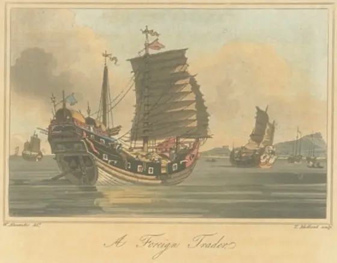
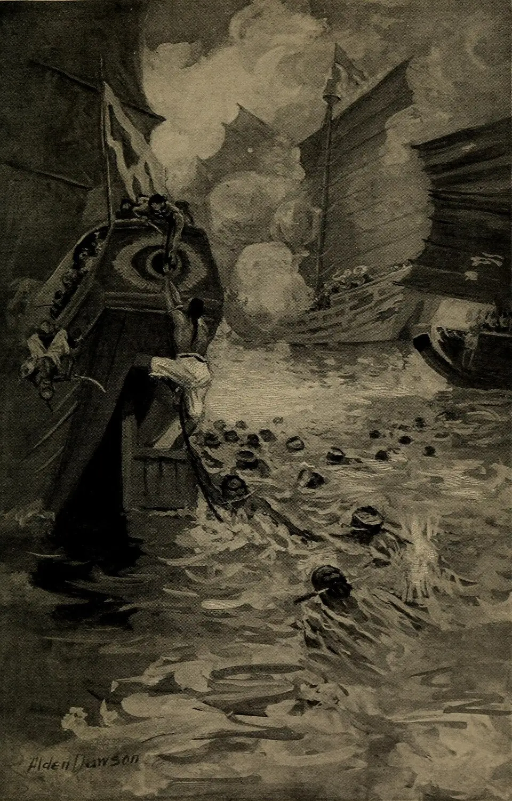
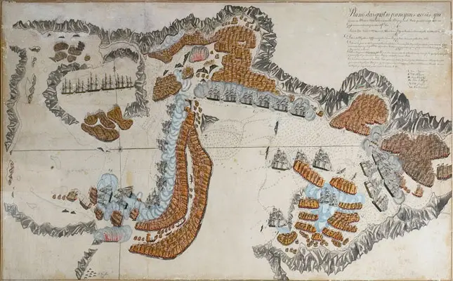

Trịnh Nhất Tẩu: nữ chúa cướp biển chỉ huy hàng vạn người
Bà là vợ một thủ lĩnh cướp biển từng đánh thuê cho nhà Tây Sơn, rồi điều khiển liên minh cướp biển lớn nhất biển Đông. Năm 1810, bà tự vào nha môn Quảng Châu thương lượng và giữ được cả mạng sống lẫn tài sản.

Ngày 17/4/1810, một người phụ nữ dẫn 17 phụ nữ và trẻ em đi vào nha môn ở Quảng Châu để gặp Tổng đốc Lưỡng Quảng Bách Linh. Bà là Trịnh Nhất Tẩu, nghĩa là "vợ Trịnh Nhất", thủ lĩnh trên thực tế của liên minh cướp biển Quảng Đông. Ba ngày sau, liên minh đầu hàng triều Thanh với 17.318 người, 226 thuyền và 1.315 khẩu pháo. Bà không bị xử tội, và sống thêm hơn 30 năm.
Từ Tân Hội đến biển Việt Nam
Bà tên thật là Thạch Dương, sinh năm 1775 gần huyện Tân Hội, Quảng Đông. Bà có thể thuộc cộng đồng dân chài Đản gia. Nhiều tài liệu, kể cả Wikipedia tiếng Việt, nói bà từng làm kỹ nữ trên thuyền hoa, nhưng bản tiếng Anh ghi rằng chuyện này thiếu bằng chứng. Năm 1801, bà kết hôn với Trịnh Nhất.
Trịnh Nhất có gốc gác gắn với Việt Nam. Theo Wikipedia tiếng Việt, khi Nguyễn Huệ ra Bắc, ông chiêu mộ các nhóm cướp biển người Hoa làm lính đánh thuê cho thủy quân Tây Sơn và cho họ căn cứ ở đảo Giang Bình, cách cửa khẩu Móng Cái chừng 25 km. Trịnh Nhất cùng người anh họ Trịnh Thất đánh thuê cho Tây Sơn. Tháng 2/1802, Trịnh Thất bị quân nhà Nguyễn bắt và xử tử ở Giang Bình. Trịnh Nhất đưa tàn quân về bờ biển Trung Quốc.
Liên minh có sáu hạm đội phân biệt theo màu cờ: đỏ, đen, xanh, trắng, vàng và tím.
Liên minh của sáu lá cờ

Tháng 7/1805, sau nhiều năm các nhóm cướp biển đánh lẫn nhau, Trịnh Nhất cùng vợ hợp họ lại bằng một thỏa ước. Liên minh có sáu hạm đội phân biệt theo màu cờ: đỏ, đen, xanh, trắng, vàng và tím. Hồng Kỳ bang của Trịnh Nhất lớn nhất. Theo bản tiếng Anh, năm 1805 hạm đội dưới quyền Trịnh Nhất có khoảng 400 thuyền và từ 40.000 đến 70.000 người; Wikipedia tiếng Việt đưa ra con số lớn hơn nhiều.
Ngày 16/11/1807, Trịnh Nhất chết ở tuổi 42. Bản tiếng Anh ghi ông rơi xuống biển trong một cơn bão. Wikipedia tiếng Việt ghi ông tử trận ở vùng biển Việt Nam khi đánh quân nhà Nguyễn, có thuyết nói do đắm thuyền, có thuyết nói bị đại bác bắn trúng.
Thạch Dương giữ được liên minh. Bà có sự ủng hộ của họ hàng chồng và nhất là của Trương Bảo, con nuôi Trịnh Nhất, người bị bắt cóc năm 1798 lúc 15 tuổi. Trương Bảo chỉ huy Hồng Kỳ bang, nhưng theo báo cáo của viên quan Ôn Thừa Chí, người dự cuộc thương lượng năm 1810, Trương Bảo "nghe lệnh vợ Trịnh Nhất, việc gì cũng hỏi rồi mới làm". Về sau hai người thành vợ chồng.
Bà thắng ai, và thua ai?


Năm 1808, Trương Bảo phục kích và tiêu diệt hạm đội 35 thuyền của tổng binh Hổ Môn. Tháng 3/1809, chính bà chỉ huy Hồng Kỳ và Bạch Kỳ đánh tan khoảng 100 thuyền của đề đốc Tôn Toàn Mưu. Những cuộc cướp phá dọc sông Châu Giang mùa thu năm đó rất đẫm máu: riêng đợt cướp của Quách Bà Đới làm chết khoảng 10.000 người.
Nhưng câu "không ai khuất phục được bà" không đúng hẳn. Từ tháng 9/1809, hải quân Bồ Đào Nha ở Ma Cao, với súng trường và đại bác bắn đạn nổ, đánh bại liên minh nhiều trận. Tàu Mercury của Công ty Đông Ấn Anh được thuê đến nhưng gần như không tham chiến. Cuối năm 1809, hạm đội cướp biển bị vây ở vịnh Đông Dũng gần đảo Lantau. Tôn Toàn Mưu thả 43 hỏa thuyền, nhưng gió đổi chiều thổi lửa ngược về phía quan quân, và bà cùng Trương Bảo phá vây chạy ra biển. Đầu năm 1810, Hắc Kỳ bang của Quách Bà Đới ra hàng.
Sử sách chép gì


Bộ luật nổi tiếng thường gắn với bà, như lên bờ tự ý thì bị xẻo tai, của cướp chỉ được giữ hai phần mười, kẻ cưỡng hiếp nữ tù binh bị xử tử, thật ra là luật của Trương Bảo. Điều này được ghi trong Tĩnh hải phân ký của Viên Vĩnh Luân, dựa trên lời kể của người trong cuộc. Sự nhầm lẫn bắt nguồn từ cuốn The History of Piracy của Philip Gosse năm 1932. Trong Tĩnh hải phân ký, tên Trương Bảo xuất hiện 88 lần, còn tên bà 25 lần.
Con số quân dưới quyền bà cũng cần đọc kỹ. Con số 50.000 hay 80.000 thường được nhắc là của cả liên minh, có khi tính cả gia đình. Khi đầu hàng, đội thuyền riêng của bà có 24 thuyền và 1.433 người.
Sau khi gác kiếm
Trương Bảo được phong chức thiên tổng và giữ 20 đến 30 thuyền riêng. Bà được phép chính thức kết hôn với ông. Phần lớn thủ hạ được ân xá, nhưng 14 tên bị chém đầu bêu dọc đường từ Ma Cao đến Tiền Sơn, 126 người khác bị xử tử. Bà được cấp đất và mở một sòng bạc. Năm 1813, bà sinh con trai Trương Ngọc Lân. Trương Bảo mất năm 1822 khi đang trấn thủ Bành Hồ. Năm 1840, bà còn kiện một viên quan tội biển thủ 28.000 lạng bạc của chồng, nhưng Lâm Tắc Từ tâu xin bãi vụ kiện. Bà mất năm 1844, thọ khoảng 68 hoặc 69 tuổi.
Năm 1935, nhà văn Jorge Luis Borges viết truyện ngắn "Góa phụ Ching, nữ cướp biển" dựa trên sách của Gosse. Ở Hồng Kông, một hang nhỏ trên đảo Trường Châu vẫn được gọi là hang Trương Bảo Tử, tương truyền là nơi ông giấu của.
Trịnh Nhất Tẩu là nhân vật có thật và đã thương lượng được một cuộc đầu hàng hiếm có; nhưng phần lớn hình ảnh huyền thoại về bà, từ bộ luật đến quy mô hạm đội, là do người đời sau thêm vào.